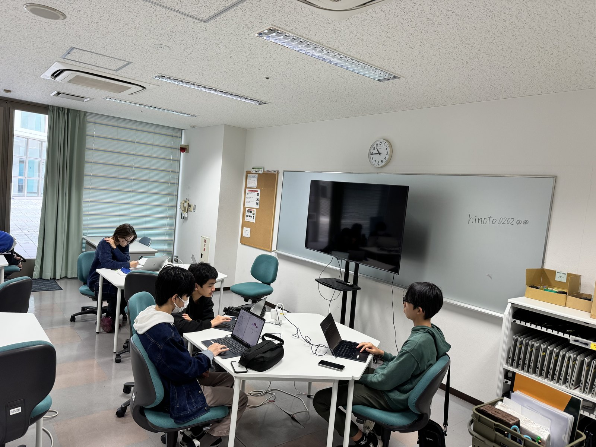
実施期間
2025年4月〜2026年3月
年間 61 日、111 コマを開催し、平常講座と大会・イベント実践を組み合わせて実施しました。
ロボット部門とプログラミング部門の二部門で実施し、WRO への挑戦、Scratch から JavaScript への発展、地域イベント運営、イベントアプリ開発、最終報告会での発表までを一体で進めました。
2025年度は、プログラミング部門 15 名、ロボット部門 6 名の計 21 名で事業を実施しました。プログラミング部門は募集ちらしと説明会を通じて参加者を募り、Scratch による基礎学習から JavaScript、作品制作、イベント運営、アプリ開発へ段階的に発展させました。ロボット部門は一般募集を行わず、継続参加者と事前体験会参加者を対象に面談のうえ参加を決定し、WRO 競技と交流大会を軸に活動しました。

年間 61 日、111 コマを開催し、平常講座と大会・イベント実践を組み合わせて実施しました。
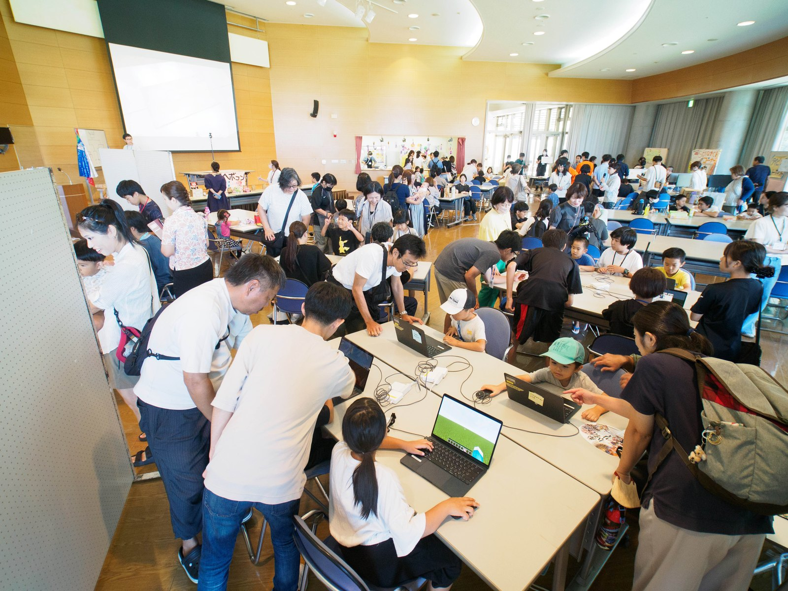
プログラミング部門 15 名、ロボット部門 6 名。小学生 12 名、中学生 8 名、高校生 1 名が参加しました。
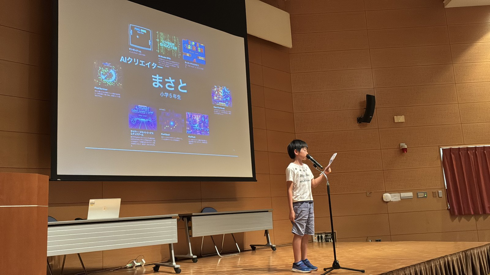
WRO、体験イベント運営、ミチシルベ公式イベントアプリ、最終報告会まで、学びと発表を往復する構成で取り組みました。
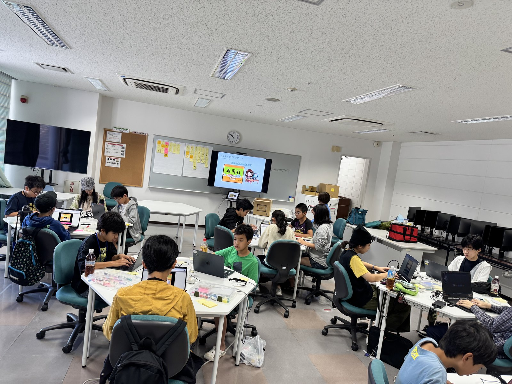
募集ちらしと説明会を通じて参加者を募り、Scratch による基礎学習から JavaScript、作品制作、ポートフォリオ整理、イベントアプリ開発、最終報告会でのプレゼンテーションまでを実施しました。JavaScript の基礎を学んだ後は、Google の Antigravity を使って、生成AIを活用した作品創りにも挑戦しました。
継続参加者を中心に、WRO 模擬大会、公認沖縄予選会、ミドル競技、全国決勝、交流大会へ向けたロボット製作・調整・発表を行いました。一般募集は行わず、事前体験会参加者を含めて面談のうえ参加者を決定しました。
通常講座、WRO 競技、親子体験イベント、イベントアプリ出展、最終報告会まで、参加者は学ぶ側と伝える側を行き来しながら活動しました。
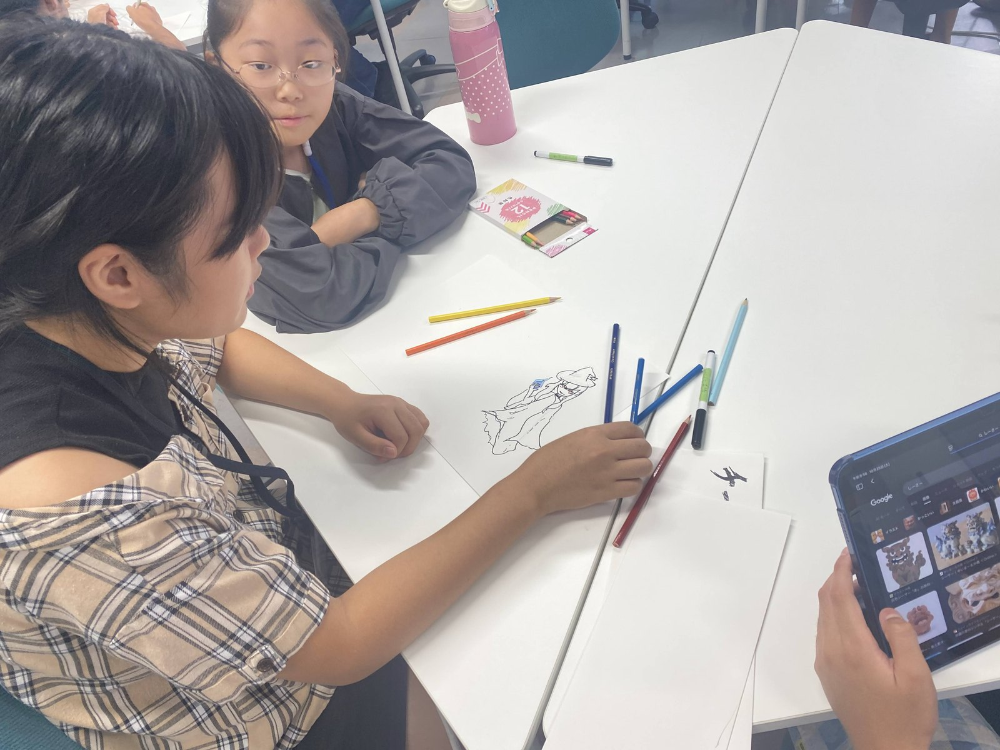
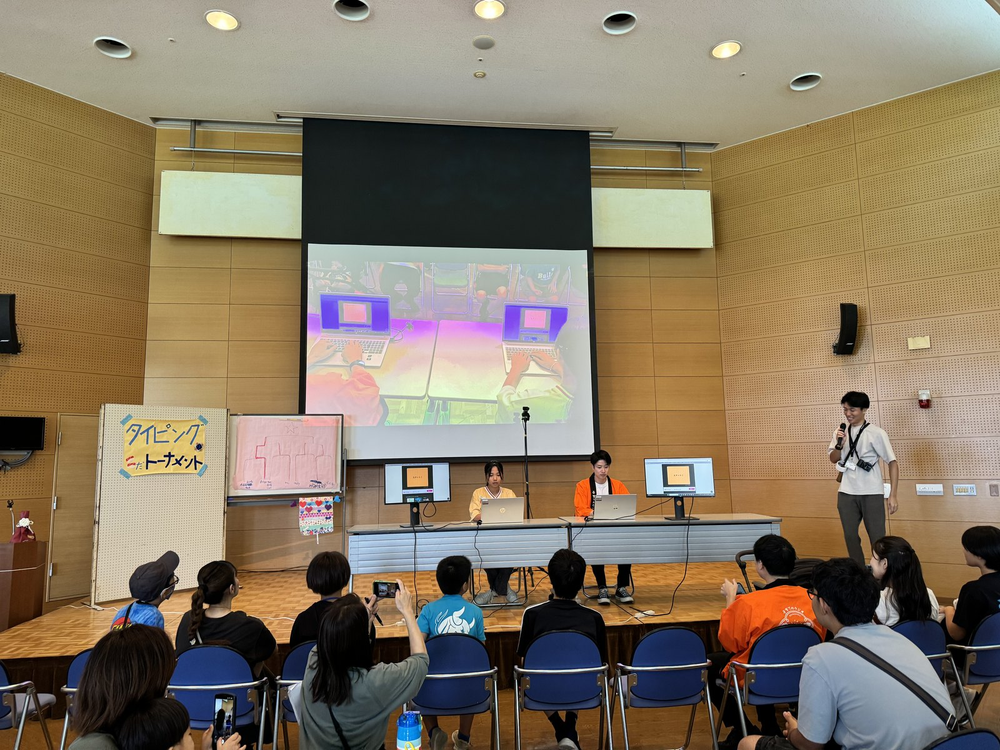
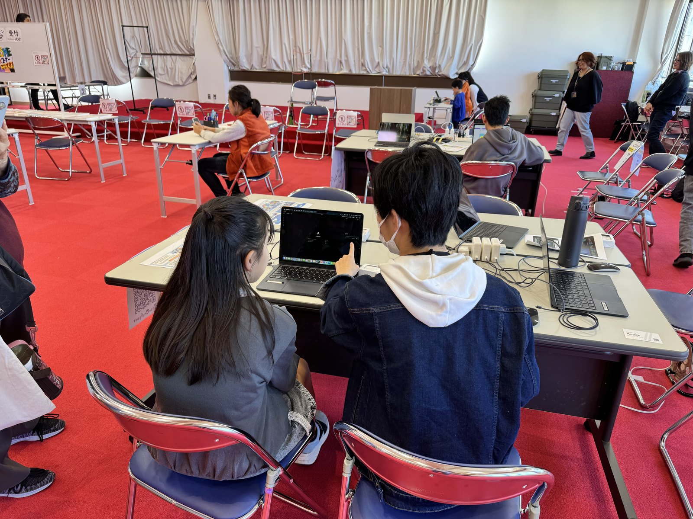
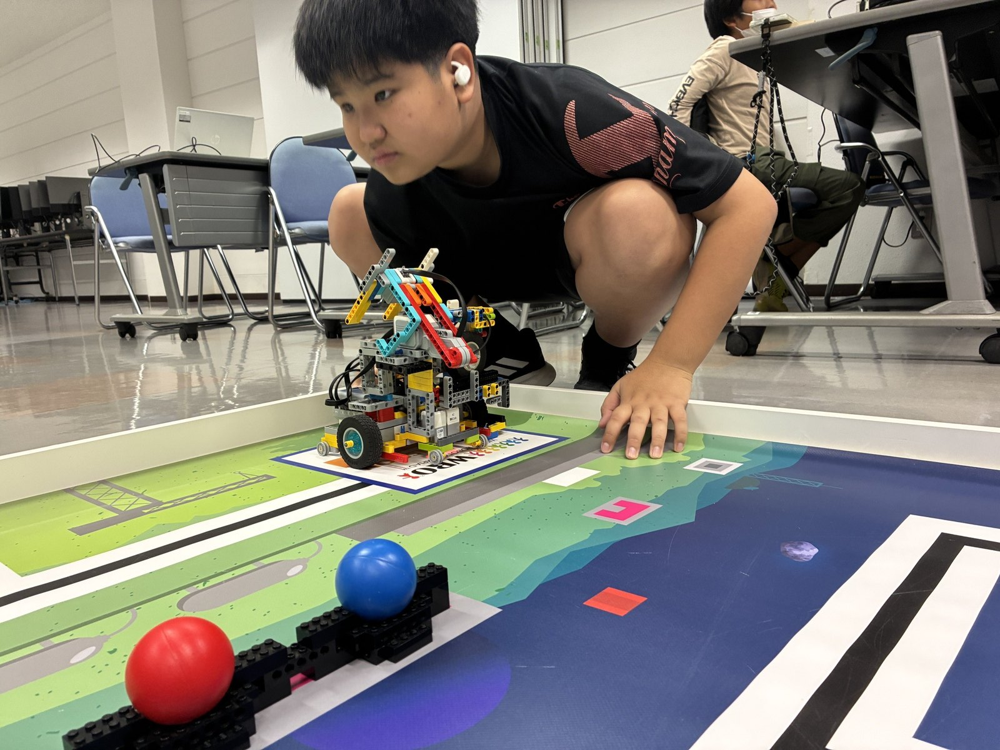
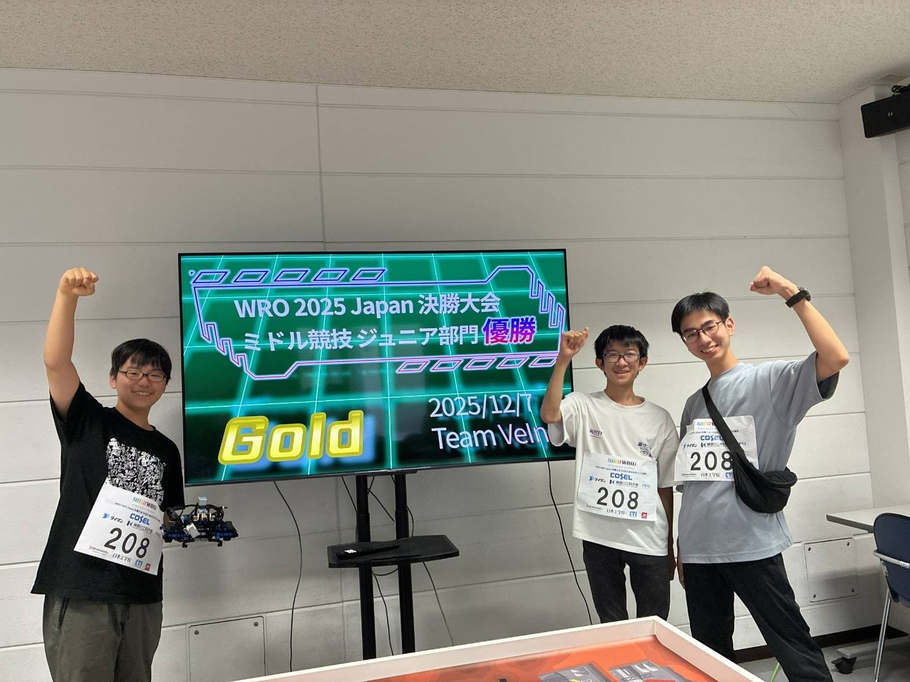
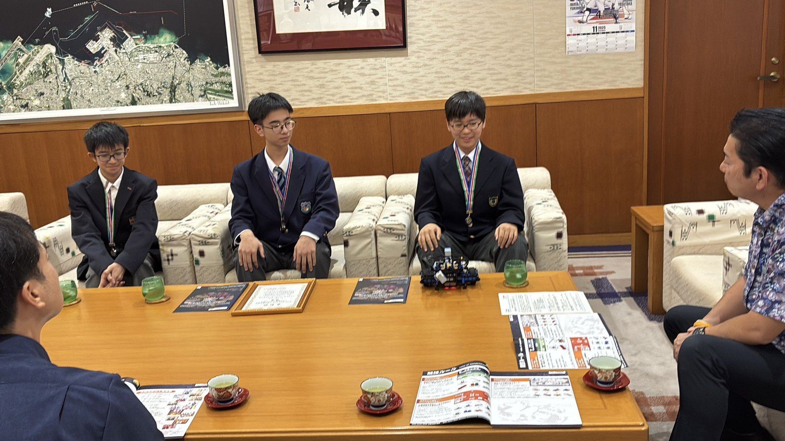
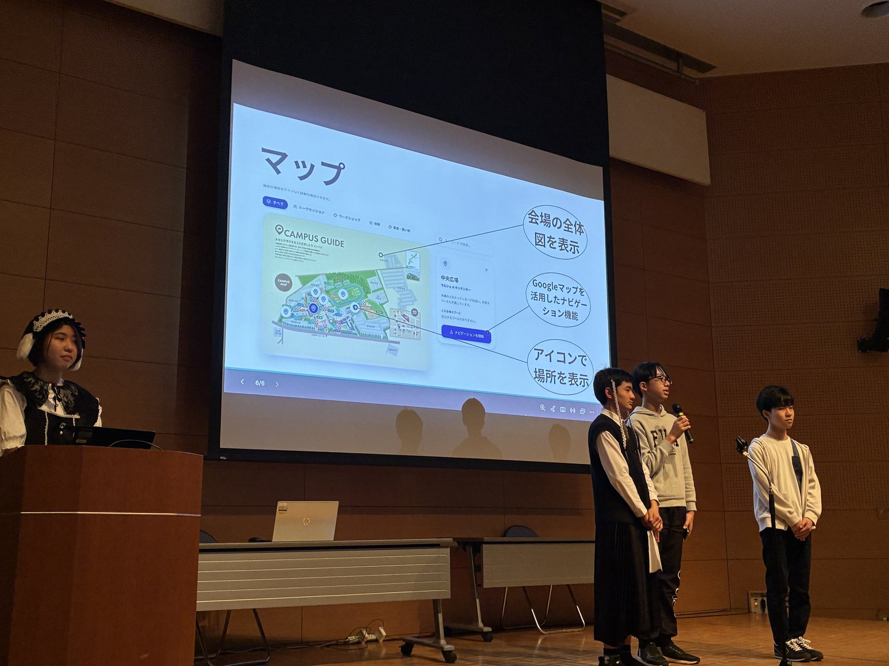
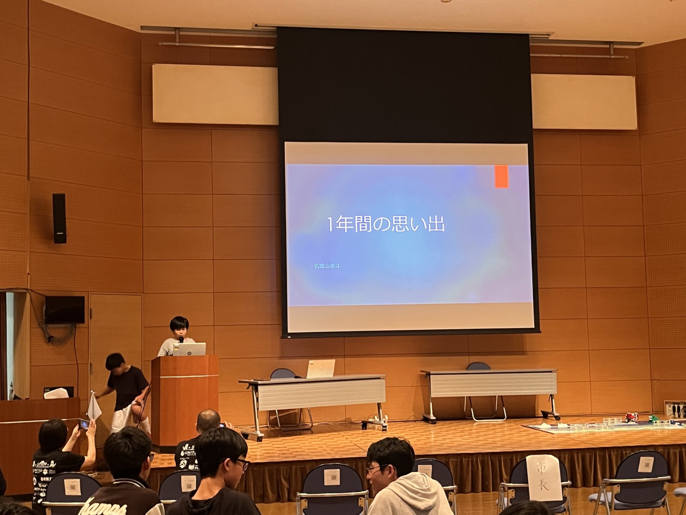
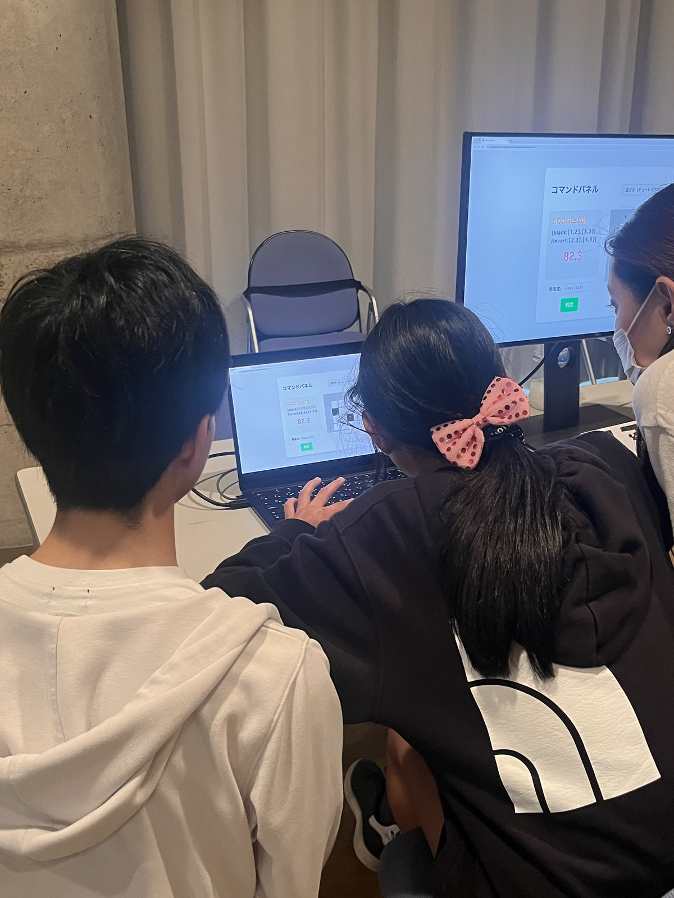
作品制作、競技大会、イベント運営、アプリ開発、公開サイト整備まで、学びの成果を外部へ伝わる形にまとめました。
Scratch から JavaScript へ進み、作品制作、プレゼンテーション、体験イベント運営を通じて、学んだ内容を人に伝える経験まで含めて取り組みました。
WRO Japan 2025 公認沖縄予選会ではエレメンタリー部門第 3 位、ジュニア部門優勝、決勝大会では Team VeIn がミドル競技ジュニア部門優勝を達成しました。
体験イベントとミチシルベ出展では、参加者が運営者・開発者として関わり、教材サイト、ポートフォリオ、イベントアプリの公開までつなげました。